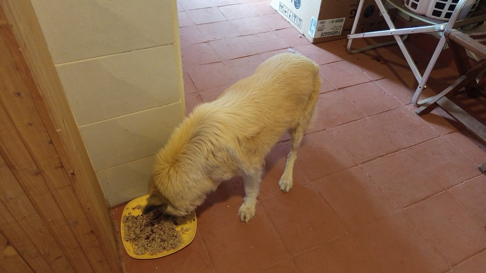
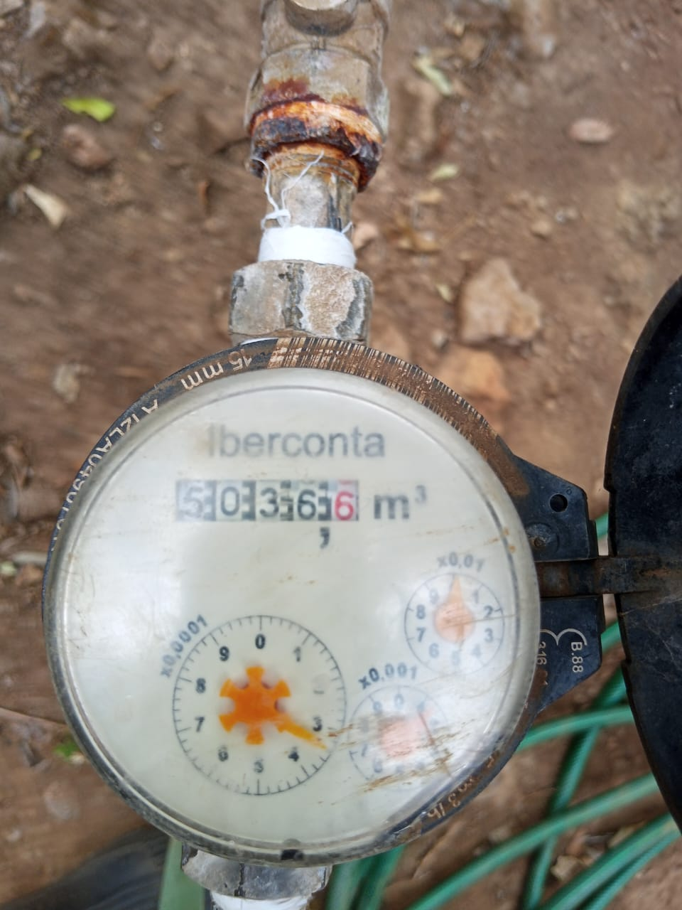

Mucheru World of Golf
Operations on Tuesday, 6th October 2026 concentrated on critical hydraulic reservoir construction, teebox launch platform shaping, and bulk material logistics across the championship course:
Mucheru World of Golf Operations Summary
Polythene dam liner sheets were laid and joined using thermal heat welding at Dam 2; perimeter anchor trenches were dug along the circumference to secure liner edges; strings were set along the embankments to ensure level elevation circumference-wide; Dam 1 and Dam 3 actively received and stored inflow; Teebox 15 platform shaping was completely finished; Teeboxes 14 and 17 underwent active shaping; and site deliveries of polythene liners, PVC pipes, and HDPE pipe coils were received.
- Dam 2 Polythene Liner Installation & Heat Welding: Deployment of heavy-gauge polythene dam liner commenced across the basin floor of Dam 2. Skilled workers rolled out the membrane sheets and utilized a specialized thermal hot-air welding tool to heat-join the overlapping seams, ensuring watertight containment across the reservoir floor.
- Dam 2 Circumference Anchor Trenches & String Leveling: Manual labor crews dug trenches along the entire perimeter of Dam 2. These anchor trenches are designed so that the polythene liner edges can be tucked in securely and backfilled with soil once liner placement is complete. Survey strings were set across the embankments to ensure level, uniform elevation throughout the reservoir circumference.
- Active Water Inflow into Dam 1 & Dam 3: Both Dam 1 and Dam 3 actively took in water during the day, expanding stored water reserves across both lined basins and confirming sound hydraulic holding capacity.
- Teebox 15 Platform Shaping Completed: Shaping and precision leveling of the Teebox 15 launch platform is now completely finished. The raised terrace has been cleanly cut to design elevation, smoothed, and leveled in readiness for final surface preparation.
- Teebox 14 & Teebox 17 Earthworks & Shaping: Earthwork shaping actively progressed on Teebox 14, where subsoil mounds were excavated and graded into the teebox profile. On Teebox 17, the launch platform was actively reshaped, cleared of surface brush, and contoured toward the playing corridor.
- Bulk Pipe & Liner Material Deliveries: Received major logistical deliveries on site, including heavy rolls of polythene dam liners, bundles of terracotta PVC pipes for drainage and culverts, and coils of durable black HDPE pressure pipes for course irrigation distribution.
Field video documentation capturing Tuesday's operations at Mucheru World of Golf: thermal heat welding of polythene dam liner sheets across Dam 2, manual perimeter anchor trench excavation along the embankment circumference, string-line leveling checks, inflow filling Dam 1 and Dam 3 reservoirs, teebox platform earthworks on Tees 14, 15, and 17, and delivery of polythene liners, PVC pipes, and HDPE pipe coils.
18-hole putting green status audit showing the latest work completed and current condition for each green as of October 6, 2026:
| Green | Current Technical & Agronomic State | Milestone Status |
|---|---|---|
| Green 1 | Surplus red soil (from 1 truck delivery) applied and leveled around collar and surrounds (Oct 2). | Surplus Red Soil Applied |
| Green 2 | Surplus red soil (from 1 truck delivery) applied and leveled around collar and surrounds (Oct 2). | Surplus Red Soil Applied |
| Green 3 | Surplus red soil (from 1 truck delivery) applied and leveled around collar and surrounds (Oct 2). | Surplus Red Soil Applied |
| Green 4 | Outlet drainage trench excavated across fairway corridor to safely discharge runoff (Oct 5). | Outlet Drainage Dug |
| Green 5 | Sprinklers turned on for active turf irrigation over 100% established grass (Oct 4). | Sprinklers Running |
| Green 6 | Surplus red soil applied to raise and level surrounds (Sep 28). | Apron Raised • Palms Placed |
| Green 7 | Shape designed and contoured with pumice bed per Joe Kamau's layout; sand delivered (Oct 4). | Shape Designed • Pumice Leveled |
| Green 8 | Surplus red soil spread and leveled around surrounds per Joe's instructions (Oct 1). | Surplus Red Soil Applied |
| Green 9 | Surplus red soil (from 1 truck delivery) applied and leveled around collar and surrounds (Oct 2). | Surplus Red Soil Applied |
| Green 10 | Surplus red soil (from 1 truck delivery) applied and leveled around collar and surrounds (Oct 2). | Surplus Red Soil Applied |
| Green 11 | Riversand application in progress over pumice bed; partial coverage completed (Oct 3). | Riversand in Progress |
| Green 12 | Surplus red soil (from 1 truck delivery) applied and leveled around collar and surrounds (Oct 2). | Surplus Red Soil Applied |
| Green 13 | Surplus red soil spread around surrounds to raise and match green level (Sep 29). | Surplus Red Soil Applied |
| Green 14 | Surplus red soil spread around surrounds to build up perimeter level (Sep 29). | Surplus Red Soil Applied |
| Green 15 | Riversand applied over pumice bed across most part of green (Oct 3). | Riversand Applied (Most Part) |
| Green 16 | Surplus red soil spread around surrounds to blend with fairway (Sep 29). | Surplus Red Soil Applied |
| Green 17 | Surplus red soil spread around surrounds to raise and align levels (Sep 29). | Surplus Red Soil Applied |
| Green 18 | Surplus red soil spread and leveled around collar and surrounds (Sep 30). | Surplus Red Soil Applied |
Comprehensive 18-hole championship teebox platform audit tracking earthwork leveling, structural embankments, and playing corridor alignments as of October 6, 2026:
| Teebox | Current Technical & Earthwork State | Platform Status |
|---|---|---|
| Tee 1 | Championship launch platform completely reshaped, cut, and graded to design elevation using Backhoe Loader (Sep 24); received 1 lorry red soil delivery (Sep 26). | Platform Reshaped |
| Tee 2 | Playing launch platform completely reshaped, contoured, and graded using Backhoe Loader (Sep 24); received 1 lorry red soil delivery (Sep 26). | Platform Reshaped |
| Tee 3 | Playing launch platform completely reshaped, contoured, and graded using Backhoe Loader (Sep 24); received 1 lorry red soil delivery (Sep 26). | Platform Reshaped |
| Tee 4 | Championship launch platform completely reshaped, cut, and graded using Backhoe Loader (Sep 23); received 1 lorry red soil delivery (Sep 26). | Platform Reshaped |
| Tee 5 | Main perimeter drainage pipeline backfilled all the way past Maina's place (Oct 2). | Drainage Backfilled |
| Tee 6 | Precision leveling and compaction completed; fresh delivery of 1 lorry red loam topsoil unloaded at platform surrounds (Sep 26). | Red Soil In • Leveled |
| Tee 7 | Both number 7 teebox platforms actively reshaped, cut, and leveled by crew under Joe Kamau and supervisors (Oct 4). | Both Platforms Reshaped |
| Tee 8 | Graded, leveled, and contour-adjusted; fresh delivery of 1 lorry red loam topsoil unloaded directly on platform (Sep 26). | Red Soil In • Graded |
| Tee 9 | Playing platform leveled and surrounding perimeter ground graded (Sep 1); received 1 lorry red soil delivery (Sep 26). | Platform Leveled |
| Tee 10 | Graded and compacted platform serving the start of the back-nine playing corridor; received 1 lorry red soil delivery (Sep 26). | Platform Compacted |
| Tee 11 | Rough shaping, elevation grading, and Backhoe subsoil leveling completed (Sep 7); received 1 lorry red soil delivery (Sep 26). | Shaped & Graded |
| Tee 12 | Dual platforms established: primary championship tee resized; new forward Ladies' Tee platform constructed (Sep 5); received 1 lorry red soil delivery (Sep 26). | Dual Platforms Complete |
| Tee 13 | Playing platform completely reshaped, contour-cut, and precision leveled to design elevations using Backhoe Loader (Sep 25); received 1 lorry red soil delivery (Sep 26). | Platform Reshaped |
| Tee 14 Today | Launch platform earthworks and shaping actively underway; subsoil cut and shaped to design profile (Oct 6). | Reshaping in Progress |
| Tee 15 Today | Launch platform shaping completely finished; terrace cut to design elevation and precision leveled (Oct 6). | Platform Reshaped |
| Tee 16 | Surplus red soil moved onto platform; launch terrace completely reshaped and leveled (Oct 5). | Platform Reshaped |
| Tee 17 Today | Launch platform reshaped, cleared of brush, and graded to playing corridor alignment (Oct 6). | Platform Reshaped |
| Tee 18 | Championship tee platform leveled; perimeter approach cleared and graded (Sep 1); received 1 lorry red soil delivery (Sep 26). | Platform Leveled |
Operations Agronomy & Engineering Synthesis
Putting Greens & Drainage Progress: 18 of 18 greens (100%) have subgrade foundations excavated and membrane lined; 18 of 18 (100%) have volcanic pumice layers compacted; all 18 greens (100%) have completed surplus red soil application; Dam 2 geomembrane liner placement and thermal heat welding actively underway with perimeter anchor trenching; string leveling ensuring uniform embankment height; Dam 1 and Dam 3 receiving and storing active inflow; major material deliveries received (polythene dam liners, PVC pipes, and HDPE piping).
Championship Teebox Platforms: Teebox 15 platform shaping completely finished; Teebox 14 and Teebox 17 platform earthworks and shaping actively underway; Teebox 16 completely reshaped and leveled.
Sequential photographic field documentation covering material pipe and liner deliveries, Dam 2 polythene lining, thermal welding, string leveling & perimeter anchor trenching, Dam 1 and Dam 3 water storage, Teebox 15 shaping completion, and Teeboxes 14 and 17 earthworks:

Material Delivery — Heavy Polythene Dam Liner Rolls
Unloading two heavy commercial rolls of black polythene dam liner wrapped in blue protective packaging from transport truck for Dam 2 hydraulic lining.

Material Delivery — Drainage & Irrigation PVC Pipes
Substantial stack of terracotta PVC pipes delivered and organized on site for perimeter drainage culverts and stormwater gravity conveyance lines.

Material Delivery — Coiled HDPE Pressure Pipes
Large coils of durable black high-density polyethylene (HDPE) pressure piping delivered to the course grounds for the fairway irrigation network.

Dam 2 Lining — Thermal Heat Welding Tool on Liner Seam
Liner deployment across the floor of Dam 2, showing an electric hot-air thermal extrusion welding gun positioned on overlapping liner sheets to create watertight seams.

Dam 2 Lining — Spreading & Connecting Liner Across Basin
Installation crew walking across the lined basin of Dam 2 to align polythene sheets, while background workers coordinate embankment preparations.

Dam 2 Earthworks — Perimeter Anchor Trenching
Labor crew with shovels excavating anchor trenches along the top circumference of Dam 2 so the polythene liner edges can be tucked in and backfilled.

Dam 2 Aerial Overview — String Leveling & Perimeter Trenching
Elevated aerial overview of Dam 2 showing deployed polythene liner sheets, leveling strings stretched across the embankments to ensure level elevation, and women crew excavating perimeter anchor trenches.

Dam 2 Aerial Perspective — Embankment Leveling & Anchor Works
High-angle aerial perspective capturing the taut guide strings measuring embankment circumference levelness, with the manual crew excavating trenches to anchor and secure the liner edges.

Hydraulic Reservoir — Dam 1 Storing Active Water Inflow
Dam 1 reservoir holding substantial accumulated water reserves over its lined basin following active inflow, showing excellent containment.

Dam 1 Aerial Status — Water Accumulation & Storage
Expansive aerial landscape of Dam 1 showcasing the vast lined reservoir actively collecting and storing rainwater inflow across the basin under clear skies.

Hydraulic Reservoir — Active Water Stream Entering Dam 3
Clear stream inflow cascading into the lined Dam 3 basin, capturing runoff and expanding the estate's primary irrigation water reserves.

Dam 3 Aerial View — Active Inflow & Lined Reservoir Storage
Elevated aerial perspective of Dam 3 showing clear water actively entering and filling the geomembrane lined reservoir, framed by the lush surrounding landscape.

Teebox 15 — Launch Platform Completely Shaped & Leveled
Wide perspective of the newly finished Teebox 15 platform, with earth cleanly shaped, terrace leveled to elevation, and approach banks smoothed.

Teebox 15 — Finished Elevation & Playing Corridor View
Ground-level perspective of Teebox 15 showing uniform terrace height, boundary fence alignment, and level launching surface ready for next works.

Teebox 15 Drone Aerial View — Finished Perimeter Edges & Contours
Overhead drone view of Teebox 15 displaying the finished launch platform with cleanly contoured perimeter edges, leveled sub-base, and staged red soil ready for final turfing.

Teebox 17 — Launch Platform Shaped & Cleared
Teebox 17 launch terrace actively shaped and cleared of vegetation, with manual crew in the background grading adjoining perimeter earthworks.

Teebox 17 — Profile View with Active Work Crew
Profile view of the Teebox 17 terrace platform showing established embankment lines and field crew working on the adjacent playing corridor.

Teebox 17 Aerial Perspective — Reshaped Platform & Corridor Alignment
High aerial perspective over Teebox 17 capturing the shaped terrace, defined platform edges, and clear orientation pointing toward the championship fairway corridor.

Teebox 14 — Platform Reshaping & Grading in Progress
Earthwork shaping actively underway on Teebox 14, cutting subsoil to profile elevation alongside boundary fence lines.

Teebox 14 — Earth Mound Excavation & Contouring
Alternative view of Teebox 14 showing substantial soil stockpiles being leveled and contoured into the championship launch platform.

Teebox 14 High Aerial Shot — Excavation & Shaping Crew
Elevated aerial overview of Teebox 14 capturing the manual work crew actively grading and shaping the teebox platform with wheelbarrows and shovels beside red soil stockpiles.
Chaka Farms
Operations at Chaka Farms on Tuesday, 6th October 2026 maintained high agronomic and livestock productivity, featuring reconciled milk production, citrus crop protection, wastewater drainage repairs, and inter-site material haulage:
Chaka Farms Operations Summary
Dairy milking yielded 6.0 Litres gross (100% reconciled: 5.0L commercial sales, 1.0L internal allocations; goat kids now fully weaned); orange citrus trees near the kennel were sprayed; main house wastewater drainage pipe was repaired with manifold construction planned; cow manure was hauled to the farm plots; murram was hauled to Gate A; and Margaret and Monica maintained compound cleanliness and planted maize seedlings.
- Reconciled Dairy Production (Kamandau): Morning milking yielded 4.0 Litres and evening milking yielded 2.0 Litres, totaling 6.0 Litres gross harvest. Commercial sales dispatches stood at 3.0L morning and 2.0L evening (5.0L daily total sold). Routine internal farm disbursements accounted for 1.0L (0.5L Gladys staff ration + 0.5L Maasai security ration), resulting in 100% accounting fidelity with zero discrepancy.
- Goat Kids Weaned Milestone: The growing goat kids have officially reached maturity and are browsing and feeding independently. Consequently, they no longer require daily milk allocations going forward.
- Citrus Plant Crop Protection (Kamandau): Kamandau carried out targeted pesticide/foliar spraying on orange trees situated near the kennel area to protect new foliage and enhance fruit set.
- Main House Wastewater Drainage Repair (Kinoti): Kinoti undertook excavation and repair of the wastewater drainage pipeline serving the main house, installing replacement orange PVC pipe within the trench. The next operational phase involves constructing a distribution manifold chamber.
- Organic Manure Haulage (Kinoti): The farm tractor (green LIMA tractor with red tipping trailer) transported fresh cow manure from the cowshed directly to the agricultural fields to enrich soil fertility.
- Murram Haulage for Gate A Entrance (Kinoti): Tractor haulage was coordinated to transport murram gravel from the golf site to Chaka Farms Gate A, filling hollow depressions to build a firm, durable, and level roadway.
- Maize Seedling Planting & Grounds Upkeep (Margaret & Monica): Margaret and Monica hand-planted maize seedlings across the farm plots and completed general compound cleaning, keeping farm grounds tidy.
Quantitative reconciliation of gross dairy harvest, commercial sales dispatches, and internal farm allocations for Tuesday, 6th October 2026:
| Production & Allocation Category | Morning Session | Evening Session | Daily Total | Accounting Classification |
|---|---|---|---|---|
| Commercial Milk Sales (Dispatched) | 3.0 L | 2.0 L | 5.0 L | Commercial Sales Outflow |
| Goat Kids Milk Ration | 0.0 L | — | 0.0 L | Weaned (Fully Grown & Independent) |
| Gladys Allocation (Staff) | 0.5 L | — | 0.5 L | Internal Farm Allocation (Staff) |
| Maasai Allocation (Security) | 0.5 L | — | 0.5 L | Internal Farm Allocation (Security) |
| Total Internal Farm Allocations | 1.0 L | Total Internal Outflow | ||
| Total Gross Cow Milk Harvested (Sales + Allocations) | 6.0 L | 100% Accounted Production (4.0L AM / 2.0L PM) | ||
📌 Ground Truth Accounting Note
In accordance with the estate milk reconciliation standard established on October 1st, Kamandau's recorded dispatches of 3.0L morning and 2.0L evening represent commercial milk sold (5.0L total). Internal disbursements comprise 0.5L morning staff ration for Gladys and 0.5L morning security ration for Maasai (1.0L total internal allocations). Notably, the goat kids have reached maturity and are now fully weaned, requiring 0.0L milk allocation going forward. Morning gross yield was 4.0L (3.0L sold + 1.0L internal allocations) and evening gross yield was 2.0L (2.0L sold), bringing total gross cow milk harvested to exactly 6.0 Litres with 100% accounting fidelity and zero discrepancy.
Sequential photographic field documentation covering wastewater drainage repair, organic manure hauling from cowshed, and murram haulage to Gate A:

Farm Plumbing — Main House Wastewater Line Repair
Excavated trench at the main house showing newly laid orange PVC drainage pipe replacing degraded sections, with manifold chamber preparation planned next.

Agricultural Logistics — Loading Cow Manure at Cowshed
Farm staff in protective boiler suits shoveling rich organic cattle manure from the cowshed holding area into the red tractor tipping trailer for crop fertilization.

Road Maintenance — Murram Transport to Gate A
Green LIMA tractor and loaded red tipping trailer (ZJ 5334) arriving at Gate A with coarse murram excavated from the golf site to fill roadway hollows.

Road Maintenance — Spreading Murram at Gate A
Workers shoveling and spreading fresh murram gravel over uneven roadway depressions at Gate A to create a compacted, firm, and level driving surface.
Kabete Residence
Operations at Kabete Residence on Tuesday, 6th October 2026 advanced civil masonry works along the forest river slope and maintained attentive domestic pet care:
Kabete Residence Structural & Stewardship Summary
Masons actively built the stone retaining wall in the forest near the river using plumb lines and vertical column rebar; PVC breather vents (weep holes) were embedded into the wall courses to relieve water pressure; wall curing was conducted with water hose spraying; and resident pets Ajabu and cats Reo, Mocha, and Aiko were fed and cared for.
- Forest Retaining Wall Masonry near River: Skilled masons actively raised the heavy-duty stone retaining wall along the forest embankment near the river. Laying dressed quarry stone blocks in mortar courses along the excavated trench, workers used taught string plumb lines to maintain alignment and integrated vertical rebar column cages for structural reinforcement.
- Installation of Breather Vents (Weep Holes): To ensure long-term slope stability, PVC breather vent pipes were embedded directly through the masonry courses. These weep holes allow ground runoff and subsoil water to escape freely, preventing hydrostatic water pressure from accumulating behind the retaining wall.
- Water Curing of Masonry Walls: Construction workers carried out systematic water curing on the newly erected masonry walls, thoroughly spraying courses with a water hose to guarantee optimal mortar hydration and compressive strength.
- Domestic Pet Care (Ajabu & Cats): In strict accordance with estate protocols, Ajabu the Golden Retriever was guided on his daily leashed walk along the paved pathways and served his wholesome daily meal. Resident cats (Reo, Mocha, and Aiko) were fed together indoors from their dedicated bowls.
Sequential photographic field documentation covering river forest retaining wall masonry, rebar reinforcement, breather vent installation, water hose curing, and domestic pet care:

Forest Retaining Wall — Foundation Courses Near River
Excavated foundation trench along the forest river slope showing dressed stone courses laid with mortar, guided by an aligned string line and column rebar cage.

Forest Retaining Wall — Masonry Alignment & Column Rebar
Elevation view along the retaining wall trench showing quarry stone courses laid true to plumb line against the excavated earthen slope.

Hydrostatic Drainage — Embedding PVC Breather Vents
Close-up of a mason bedding an orange PVC breather vent pipe into a stone course, establishing weep holes to discharge water and relieve hydrostatic pressure.

Retaining Wall Masonry — Laying Quarry Stone Courses
Masons with trowels laying mortar and bedding stone blocks along the retaining wall structure, maintaining vertical plumb and joint alignment.

Structural Masonry — Corner Return Along Embankment
Stepped masonry wall corner and return wall structure built against the excavated red earth bank, showing sound interlocking stone joinery.

Masonry Construction — Crew Aligning & Bedding Stones
Active masonry construction site with masons utilizing plumb string guides and mortar buckets to raise structural stone courses along the foundation.

Mortar Curing — Water Hose Spraying Over Stone Walls
Site worker applying a continuous water spray from a garden hose over the newly constructed stone walls to ensure proper mortar curing and strength.

Wall Hydration — Water Spray Curing Along Top Course
Close-up view of water being poured directly along the uppermost stone course to saturate fresh mortar joints during daily hydration curing.

Domestic Pet Care — Ajabu on Guided Walk
Ajabu the Golden Retriever on a guided on-leash walk along the red paved driveway walkway, enjoying outdoor exercise.

Domestic Pet Care — Ajabu Exploring Grounds
Ajabu exploring the garden perimeter during his afternoon exercise routine along the estate grounds.

Domestic Pet Care — Ajabu's Daily Meal
Ajabu enjoying his wholesome cooked meal served in a dedicated feeding dish indoors.

Domestic Pet Care — Cats Reo, Mocha & Aiko Feeding
Resident cats Reo, Mocha, and Aiko feeding peacefully side by side from stainless steel bowls in their dedicated feeding area.
Amani Cottage
Operations at Amani Cottage on Tuesday, 6th October 2026 maintained immaculate compound hygiene, comprehensive interior housekeeping, natural rainfall lawn irrigation, and precise utility water consumption tracking:
Amani Cottage Operations Summary
Edwin carried out compound sweeping and litter collection; interior housekeeping cleaned upstairs and dusted downstairs spaces, with the washed carpet returned; turf irrigation was handled automatically by a steady rainfall downpour; and water utility consumption was recorded at 0.2 m³ for house cleaning.
- Grounds Sweeping & Litter Collection (Edwin): Edwin thoroughly swept the paved driveways, stone footpaths, and cottage grounds, clearing fallen leaves and collecting garden litter to keep outdoor spaces pristine.
- Interior Housekeeping & Carpet Return: Comprehensive interior housekeeping was executed. The housekeeper thoroughly cleaned upstairs rooms, dusted downstairs living and dining spaces, and returned the freshly washed carpet back into place.
- Automated Natural Rainfall Irrigation: Garden and lawn irrigation was accomplished naturally by heavy rainfall, delivering deep moisture across the entire green lawn and ornamental borders without requiring manual sprinkler operation.
- Water Utility Consumption Tracking: Water usage was accurately tracked via the Iberconta utility meter, recording exactly 0.2 m³ of water consumed for today's domestic house cleaning activities.
Photographic field documentation showing natural rainfall downpour, cottage exterior following rain, and water meter verification readings:

Natural Irrigation — Heavy Rainfall Downpour
Steady rainfall pouring over the paved courtyard and grounds, providing natural deep irrigation across the entire landscape.

Cottage Exterior — Lush Lawn & Stone Pathway
Exterior frontal perspective of Amani Cottage showing the manicured green lawn and wet stepping stone pathway refreshed after the rain.

Utility Tracking — Iberconta Water Meter Reading
Close-up of the Iberconta utility water meter documenting household consumption for Tuesday's operations.
.jpeg)
Utility Tracking — Meter Consumption Verification (0.2 m³)
Verification photo of the water meter dial confirming exactly 0.2 m³ of water utilized for daily domestic cleaning tasks.